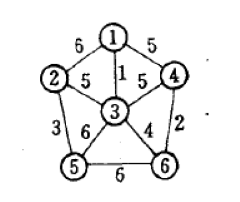
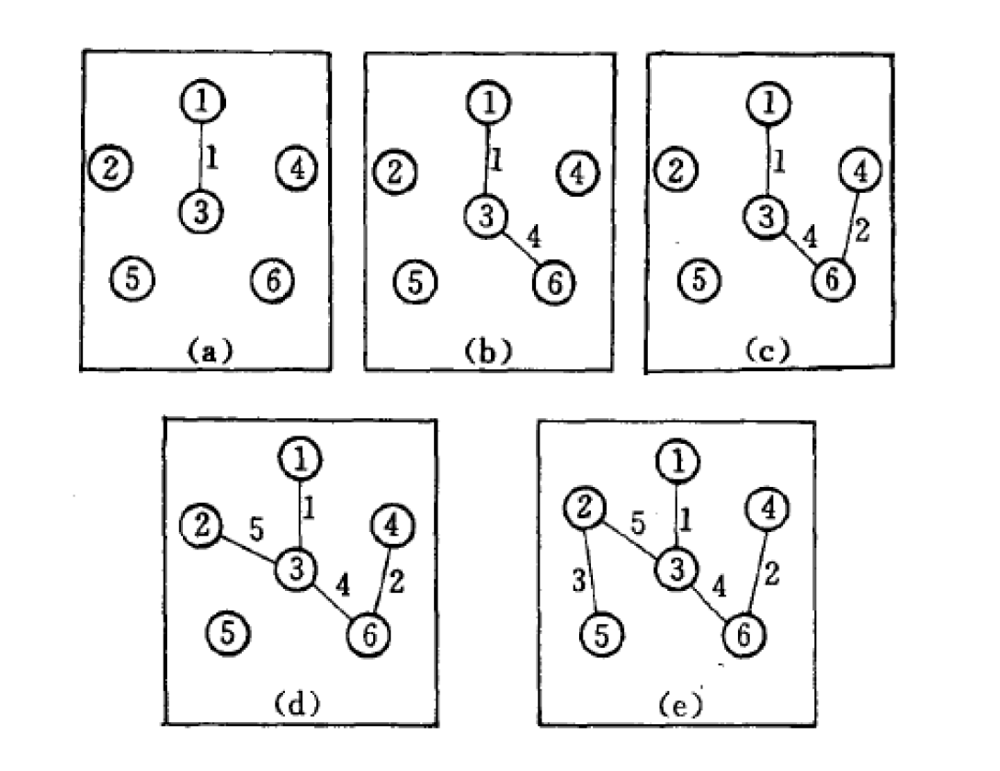
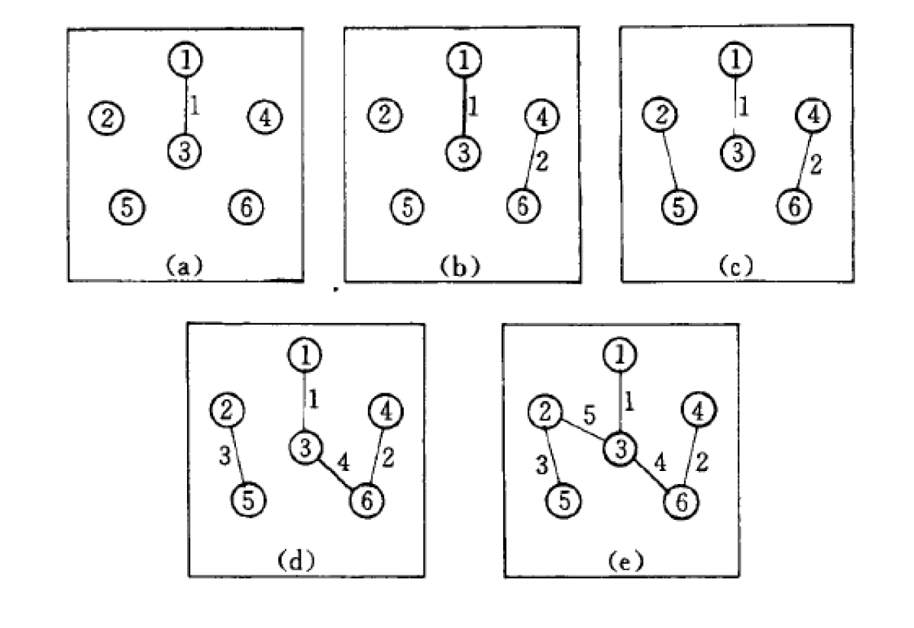

最小生成树 最小生成树介绍 最小生成树：一个有 n 个结点的连通图的生成树是原图的极小连通子图，且包含原图中的所有 n 个结点，并且有保持图连通的最少的边。
最小生成树的性质：设G=(V，E）是一个连通网络，U是顶点集V的一个非空真子集。若(u，v）是G中一条“一个端点在U中（例如：u∈U），另一个端点不在U中的边（例如：v∈V-U），且（u，v）具有最小权值，则一定存在G的一棵最小生成树包括此边（u，v）。
注：一般来说最小生成树指的是无向连通图(有向连通图也可能由最小生成树，但一般不讨论)，且最小生成树不是唯一的。
Prim算法 实现步骤
设有一个加权连通图，其中顶点集合为V，边集合为E；
令$V_{new}$= {x}，其中x为集合V中的任一节点（起始点），$E_{new}$= {},为空；
重复下列操作，直到$V_{new}$= V：
在集合E中选取权值最小的边，其中u为集合$V_{new}$中的元素，而v不在$V_{new}$集合当中，并且v∈V（如果存在有多条满足前述条件即具有相同权值的边，则可任意选取其中之一）；
将v加入集合$V_{new}$中，将边加入集合$E_{new}$中；
简单的说就是从V-E集合中不断取出最小权值的点加如到E中
Prim算法的时间复杂度(无论是何种存储图的方式)为$O(n^2)$，与网中的边数无关。因此适合求边稠密的网的最小生成树。
实例理解 如下图的一个无向带权图

1 2 3 4 5 6 7 8 9 10 11 12 13 14 15 16 17 18 19 20 21 22 23 24 25 26 27 28 29 30 31 32 33 34 35 36 37 38 39 40 41 42 43 44 45 46 47 48 49 50 51 52 53 54 55 56 57 58 59 60 61 62 63 64 65 66 67 #include <stdio.h> #include <malloc.h> #define INF 1<<29 //无穷大 #define vex 6 //顶点个数 #define bor 10 //边的个数 int graph[vex][vex]; int sum; void init(){ sum=0; int i,j; for(i=0;i<bor;i++){ for(j=0;j<bor;j++){ if(i==j) graph[i][j]=0; else{ graph[i][j]=INF; } } } int a,b,c; for(i=0;i<bor;i++){ scanf("%d%d%d",&a,&b,&c); graph[a][b]=c; graph[b][a]=c; } } void prim(){ int lowcost[vex]; //用来存储各个顶点到连通图的最小代价，为0表示该顶点在连通图中 int close[vex]; //用来存储前驱结点 int min,begin=0; int i,j,k; for(i=0;i<vex;i++){ //初始化 ，从第0个顶点开始生成最小树。 lowcost[i]=graph[begin][i]; close[i]=begin; } for(i=0;i<vex;i++){ if(i==begin) continue; min=INF; for(j=0;j<vex;j++){ //找出与其相邻的最短边 if(lowcost[j]!=0&&lowcost[j]<min){ min=lowcost[j]; k=j; } } printf("{%d,%d}%3d\n",close[k],k,graph[close[k]][k]); sum+=graph[close[k]][k]; lowcost[k]=0; //将k加入连通图内 for(j=0;j<vex;j++){ if(graph[k][j]!=0&&graph[k][j]<lowcost[j]){ //更新剩余点 lowcost[j]=graph[k][j]; close[j]=k; } } } } int main(){ // freopen("aa.txt","r",stdin); // freopen("bb.txt","w",stdout); init(); prim(); printf("sum = %d",sum); return 0; }
测试数据
1 2 3 4 5 6 7 8 9 10 0 1 6 0 3 5 0 2 1 1 2 5 2 3 5 2 4 6 1 4 3 4 5 6 2 5 4 3 5 2
输出结果
1 2 3 4 5 6 {0,2} 1 {2,5} 4 {5,3} 2 {2,1} 5 {1,4} 3 sum = 15
下面给出实现过程

Kruskal算法 实现步骤 假设 W=(V,{E}) 是一个含有 n 个顶点的连通网，则按照克鲁斯卡尔算法构造最小生成树的过程为：先构造一个只含 n 个顶点，而边集为空的子图，若将该子图中各个顶点看成是各棵树上的根结点，则它是一个含有 n 棵树的一个森林。之后，从网的边集 E 中选取一条权值最小的边，若该条边的两个顶点分属不同的树，则将其加入子图，也就是说，将这两个顶点分别所在的两棵树合成一棵树；反之，若该条边的两个顶点已落在同一棵树上，则不可取，而应该取下一条权值最小的边再试之。依次类推，直至森林中只有一棵树，也即子图中含有 n-1条边为止。
简单的来说就是每次选取最短的边，如果两端点不在同一树内，则将两端点所在的树合并。
Kruskal算法的时间复杂度为$O(e{log_2}e)$，其中e为网内的边数。因此它仅与边的个数有关，适合求边稀疏的网的最小生成树。
Kruskal与Prim的比较 Prim算法：初始值为某个顶点(即仅有一个连通分量)，在该连通分量上不断添加边和顶点。直至所有顶点都在该连通分量中。
Kruskal算法：初始值为n个顶点(即有n个连通分量(n颗仅有跟结点的树))，每次使连通分量减一(即树的合并)。最终使连通分量变为1。
实例理解 给出上面例子的Kruskal过程
